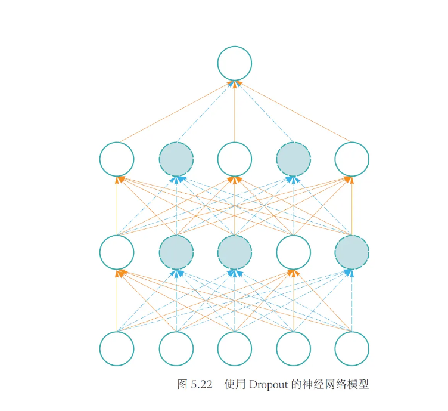

神经网络与深度学习¶
前馈神经网络与参数优化¶
神经元模型与感知机¶
从图可见，给定n个二值化（0或1）的输入数据\(x_{i}(1 ≤i ≤ n)\)与连接参数\(w_{i}(1 ≤ i ≤ n)\) ，MCP神经元模型对输入数据线性加权求和，然后使用函数\(\phi(·)\)将加权累加结果映射为0或1，以完成两类分类任务。

早期的感知机结构和MCP模型相似，由一个输入层和一个输出层构成，因此也被称为“单层感知机”。感知机的输入层负责接收实数值的输入向量，输出层则能输出1或-1两个值。单层感知机可作为一种两类线性分类模型

对于具有n个输入以及对应连接权重系数为w；的感知机，首先通过线性加权得到输入数据的累加结果\(z=w_1x_1+w_2x_2+...+b\)，其中\(x_1,x_2,...,x_n\)为感知机的输入，\(b\)为偏置项 (bias)。然后将\(z\)作为激活函数\(\phi(·)\)的输入，激活函数会将\(z\)与某一阈值 (此例中，阈值为0)进行比较，如果大于该阈值则感知器输出为1，否则输出为-1。通过这样的操作，输入数据被分类为1或-1这两个不同类别。
感知机中的连接权重参数并不是预先设定好的，而是通过多次迭代训练得到的。具体而言，单层感知机构建损失函数，来计算模型预测值与数据真实值之间的“误差”，通过最小化损失函数取值，来优化模型参数。
感知机是有局限的，它可模拟逻辑与、逻辑与非等线性可分函数，但无法完成逻辑异或这一非线性可分逻辑函数任务。

前馈神经网络（多层感知机）¶
在感知机模型中增加若干隐藏层，增强神经网络的非线性表达能力，就会让神经网络具有更强的拟合能力。因此，由多个隐藏层构成的多层感知机被提出，这也被称为前馈神经网络。
如图所示，前馈神经网络由输入层、输出层和若干隐藏层构成。网络中各个隐藏层中神经元可接收相邻前序隐藏层中所有神经元传递而来的信息，经过加工处理后将信息输出给相邻后续隐藏层中所有神经元。

前馈神经网络中相邻层所包含的神经元之间通常使用“全连接”方式进行连接。所谓“全连接”是指两个相邻层之间的神经元相互成对连接，但同一层内神经元之间没有连接。前馈神经网络可以模拟复杂非线性函数功能，所模拟函数的复杂性取决于网络隐藏层数目和各层中神经元数目。
前馈神经网络的重要特征¶
- 层层递进、逐层抽象：明暗幅度的像素点被映射为高层语义对象的概率值。
- 非线性映射：亿万个神经元所组成的神经网络就可实现将输入数据将神经网络用于分类任务，将输入数据（如图像、文本和听觉等信息）从一个空间（如像素点空间）映射到另外一个空间（如文本单词空间等），这一过程就是一个复杂的非线性变换。
- 误差反馈调优：误差后向传播算法会将误差（由损失函数定义）由输出端由后向前传播，逐层去更新神经元链接权重和非线性映射函数等参数，使得神经网络模型拟合数据（data fitting），让神经元之间记住这种刺激或者强化信息流通路，从而在输入数据和输出结果之间建立关联。
常见激活函数¶


神经网络参数优化¶
在设计完成一个多层神经网络的结构后（例如隐藏层数量、每层神经元数量及非线性激活函数等），需要对神经网络参数（如神经元间连接权重系数及激活函数系数等）进行优化学习，以使神经网络能将给定输入数据映射到期望的输出语义空间（例如将像素点构成的图像数据映射为人脸），完成分类识别等任务。
神经网络参数优化是一个监督学习的过程。给定n个标注样本数据\((xᵢ，yᵢ)\)，这里\(x_{i}\)是输入数据，\(y_{i}\)是\(x_{i}\)的类别等标注信息。假设输入数据\(x_{i}\)经过神经网络处理后所得输出预测值为\(\hat{y}_{i}\)，则可通过损失函数来计算模型预测值\(\hat{y}_{i}\)与真实值\(y_{i}\)之间误差或损失，利用其来优化模型参数，以便让神经网络按照\(x_{i}\)的真实信息\(y_{i}\)输出,即让神经网络对数据进行拟合 (data fitting)。
具体而言，模型会利用反向传播算法将损失函数计算所得误差从输出端出发、由后向前传递给神经网络中每个单元，然后通过梯度下降算法对神经网络中参数进行更新。随着迭代的进行，模型预测所得；与真实值y；之间的误差逐步缩小，模型预测准确率得以提升，预测的能力得以增强，当迭代达到一定轮次或准确率达到一定水平时，则可认为模型参数已被优化完毕。
损失函数¶
损失函数（loss function）又称为代价函数（cost function），用来计算模型预测值与真实值之间的误差。损失函数是神经网络设计中的一个重要组成部分。通过定义与任务相关的良好损失函数，在训练过程中可根据损失函数来计算神经网络的误差大小，进而优化神经网络参数。
两种最常用的损失函数：均方误差损失函数和交叉熵损失函数。
均方差损失函数¶
\(MSE = \frac{1}{n} \sum_{i=1}^{n}(y_{i}-\hat{y}_{i})^2\)

交叉熵损失函数¶
\(H(y_i \hat y_i)= - y_i \cdot \log \hat{y}_i\)

梯度下降¶


梯度下降的方法¶

反向传播算法¶
反向传播算法（backpropagation algorithm）是神经网络参数优化的关键算法。它是一种计算神经网络误差的梯度的方法。反向传播算法通过计算神经网络各层之间的权重更新，来最小化损失函数。


卷积神经网络¶

填充与步长¶
- 填充：从前面的介绍可知，位于被卷积图像边缘位置的像素点无法形成一个以其为中心、与卷积核大小一致的图像子块区域，因此无法对边缘位置的像素点进行卷积滤波。为了使边缘位置的图像像素点也参与卷积滤波，填充技术被提出。该方法在边缘像素点周围填充“0”（即0填充），使得可以以边缘像素点为中心形成与卷积核同样大小的图像子块区域。注意，在这种填充机制下，卷积后的图像分辨率将与卷积前的图像分辨率一致，不存在下采样。
- 步长：在进行卷积操作时，通常希望被卷积所得的图像分辨率与卷积前的图像分辨率相比逐渐减少，即图像被约减。步长方法通过改变卷积核在被卷积图像中移动步长的大小来跳过一些像素，进行卷积滤波。当stride = 1时，卷积核滑动跳过1个像素，这是最基本的单步滑动，也是标准的卷积模式。stride = k表示卷积核移动跳过的步长是k。如果将步长改为2，则可得到一个2 × 2的卷积滤波图像结果（见下图）。

特点¶

池化¶
最大池化（max pooling）：从输入特征图的某个区域子块中选择值最大的像素点作为最大池化结果。
平均池化（average pooling）：计算区域子块所包含所有像素点的均值，将均值作为平均池化结果。
k-max池化（k-max pooling）：对输入特征图区域子块中的像素点取前k个最大值。

循环神经网络¶


长短时记忆模型（LSTM）¶
- 与简单的循环神经网络结构不同，长短时记忆网络中引入了内部记忆单元和门结构来对当前时刻输入信息以及谦虚时刻所生成的信息进行整合和传递。在这里，内部记忆单元中信息可视为对“历史信息”的累积。
- 常见的LSTM模型中有输入门、遗忘门、输出门三个门结构。对于给定的当前时刻输入数据\(x_t\)和前一时刻的隐式编码\(h_{t-1}\)，输入门、遗忘门、输出门通过各自参数对其进行编码，分别得到三种门结构输出\(i_t,f_t,o_t\)
- 在此基础上，再进一步结合前一时刻内部记忆单元信息\(c_{t-1}\)来更新当前时刻的内部记忆单元信息\(c_t\)，最终得到当前时刻的隐式编码\(h_t\)。


- 输入门、遗忘门和输出门通过各自参数对当前时刻输入数据\(x_t\)和前一时刻的隐式编码\(h_{t-1}\)处理后，利用激活函数sigmoid将其映射到0-1之间，得到三种门结构输出\(i_t,f_t,o_t\)。正是由于三个门结构的输出值为位于0-1之间的向量，因此其在信息处理中起到了“调控开关”的“门”的作用。三个门结构所输出的向量的维数、内部记忆单元的维数和隐式编码的维数均相等。

注意力与正则化¶
注意力机制¶
- 注意指意识对一定信息或对象的指向与集中的过程，具有选择性和集中性等特点，是一切心理过程得以产生和进行的必不可少的心理属性。
- 在自然语言中，注意力可理解为句子级或篇章级中单词和单词之间因为上下文而共同出现的概率；在图像分析中，注意力可理解为在一定视觉区域中视觉子块之间的空间分布模式；在机器翻译中，注意力可理解为输入源语言单词和输出目标语言单词之间的关联。


- 这里的查询向量、键向量和值向量可从搜索引擎角度来理解：查询向量为搜索单词、键向量为被搜索物品的描述信息（如标题等）、值向量为被搜索物品的语义内容。于是可如下理解自注意力关联：在每个单词具有自身内容（值向量表示）的基础上，给定自然语言句子，计算给定单词和句子中其他单词之间归一化关联度，利用关联度大小来对每个单词的自身内容调整和加权取和，以反映每个单词在句子中因为上下文语义而与其他单词之间的自注意力。
- 当然，也可引入“多头”注意力（multi-headed attention）机制从更多角度来挖掘某个单词与其他单词之间概率关联。同时也应该了解，某个单词的自注意力关联可并行计算，而不像循环神经网络RNN那样，需要通过自回归的方式来一个单词接着一个单词来处理。
- 一旦计算得到单词和其他单词所形成的自注意力关联后，Transformer再将这些自注意力关联通过前向神经网络（feed-forward）进行非线性映射。非线性变换的引入能帮助模型捕捉到更丰富的特征和语义信息，有助于提高模型的表达能力（如更好捕获单词和单词之间复杂的共现概率）。
正则化¶
- 深度神经网络结构复杂、参数众多，很容易造成过拟合（over-fitting）。为了缓解神经网络在训练过程中出现的过拟合现象，需要采取一些正则化技术来提升神经网络的泛化能力（generalization）。
- 正则化操作常见的有：Dropout，批归一化。
- Dropout：指在训练神经网络的过程中随机丢掉一部分神经元来降低神经网络的复杂度，从而防止过拟合。Dropout的实现方法很简单：在每次迭代训练中，以一定概率随机屏蔽每一层中的若干神经元，用余下的神经元构成的网络继续训练。

- 批归一化： 批归一化就是通过规范化手段，把神经网络每层中的任意神经元的输入值分布改变成均值为0、方差为1的标准正太分布，把偏移较大的分布强制映射为标准正太分布。经过批归一化处理，激活函数的输入值被映射到非线性函数梯度较大的区域，使得梯度变大从而克服梯度消失问题，进而加快收敛速度。